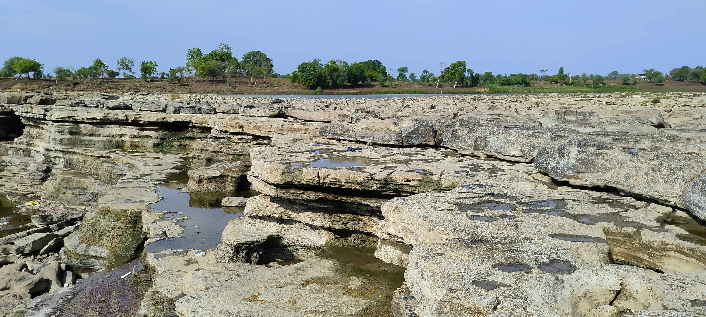
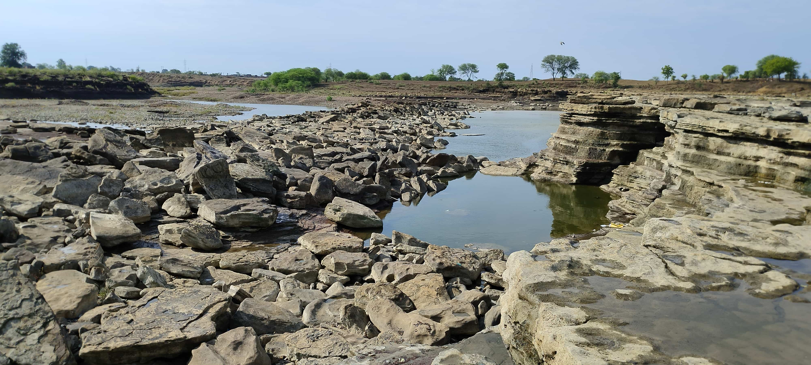

Once you reach the Bhadbhada Waterfall, you are greeted by an awe-inspiring sight. The water cascades down from a height, creating a stunning spectacle of nature's power and beauty. The mist that surrounds the waterfall adds a touch of mystique, transporting you to a realm of tranquility.
The Bhadbhada Waterfall can be reached by Hatta-Tikamgarh road. It is approximately 5 kilometers from Hatta. You can hire a taxi or drive to the location.
Swimming in the Bhadbhada Waterfall is not advised due to strong currents. It is essential to prioritize your safety and enjoy the view from a distance.
No there aren't many nearby attractions
In conclusion, the Bhadbhada Waterfall near Hatta, Damoh, MP, India, is a captivating natural wonder that will leave you spellbound. Its majestic beauty, combined with the tranquil surroundings, creates a serene escape from the hustle and bustle of city life. Remember to capture the moments, but also take the time to immerse yourself in the blissful ambiance.
 